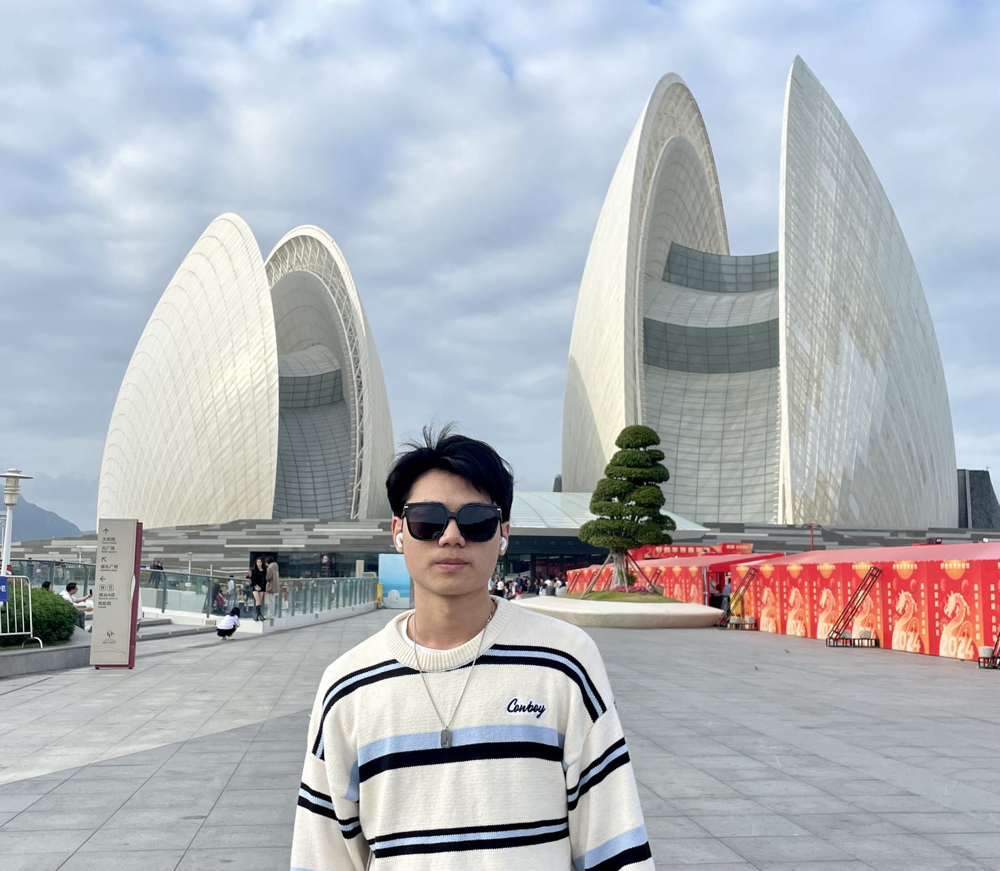
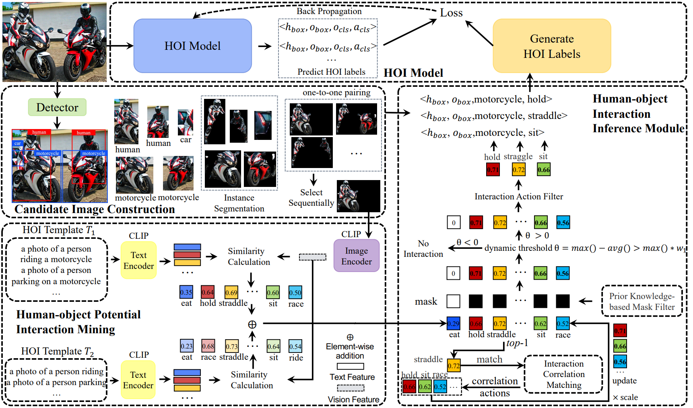

|
Isaac Xinyu Jiang (蒋新宇)
I am a junior undergraduate student from
South China University of Technology, working with Prof. Qi
Liu. .
Email /
CV /
Github /
|

|
|
Research Interests
My research focuses on computer vision, machine learning, and artificial
intelligence, specifically
aimed at advancing
human-object interaction (HOI) understanding. I specialize in developing innovative
algorithms for
HOI detection,
particularly in weakly supervised learning. My goal is to reduce annotation burdens while
maintaining or improving
performance. I'm also interested in leveraging cross-modal information like text-image models to
enhance HOI detection
accuracy. Ultimately, I aim to contribute to more efficient computer vision systems for
understanding complex real-world
scenes.
|
|
Research Experience
School of Future Technology, SCUT
Research Intern 8/22 – present
Human-Object Interaction advised by Prof. Qi Liu
(IEEE Senior Member) .
HOI detection aims to recognize interactions between humans and objects in images. Collaborating
with mentors and senior
students in our Human-Computer Interaction lab, I proposed a label-free training method for HOI
models, applied for a
patent, and authored a paper submitted to TIP.
School of Future Technology, SCUT
National Key Project 6/23 – present
Early Disease Detection advised by Prof. Zhanpeng Jin
.
This is a nationally funded university innovation and entrepreneurship program. We aim to provide a
convenient,
accurate, and user-friendly tool that utilizes children's gaze and facial features to aid in the
early detection of
signs of autism. Creating a mobile app for early autism detection, incorporating a gaze estimation
model and an autism
detection model based on gaze point distribution.
Shien-Ming Wu School of Intelligent Engineering, SCUT
Student Research Project 4/23 – present
Natural Language Processing advised by Prof.
Ziqian Zeng
.
Joined the "Research on Inference Optimization Techniques for Transformer Models" SRP project team.
The goal of this
project is to achieve a 5x acceleration on top of BERT with an accuracy loss of less than 1%.
|
|
Education Experience
South China University of Technology (SCUT), Guangzhou, China 09/21 – 06/25(expected)
B.Eng (Majoring in Artificial Intelligence)
Main courses: Big Data and Data Mining Course Practicum (4.0/4.0), Deep Learning
and Computer Vision Course Design (4.0/4.0), Digital
Image Processing (4.0/4.0), Machine Learning Course Design (4.0/4.0),
C++ Programming Foundations I & II (4.0/4.0), Python Programming
(4.0/4.0), Artificial Intelligence and 3D
Vision(4.0/4.0), Linear Algebra and Analytical Geometry(4.0/4.0), Calculus
I & II (4.0/4.0)......
|
|
Awards
The Taihu Innovation Scholarship (ranked 1/160 comprehensively, ￥8000, Wuxi city
governments)
TCL Corporate Scholarships (ranked 1/40 comprehensively, ￥20000, TCL Technology)
SCUT School Scholarship (ranked 1/40 comprehensively, ￥20000, SCUT)
Asia and Pacific Mathematical Contest in Modeling (APMCM) -- The Third Prize
|
|

|
FreeA: Human-object Interaction Detection using Free Annotation Labels
Yuxiao Wang,
Zhenao Wei,
Xinyu Jiang,
Yu Lei,
Weiying Xue,
Jinxiu Liu,
Qi Liu,
In this paper, we propose a novel self-adaption language-driven HOI detection method, termed
as FreeA, without labeling
by leveraging the adaptability of CLIP to generate latent HOI labels. To be specific, FreeA
matches image features of
human-object pairs with HOI text templates, and a priori knowledge-based mask method is
developed to suppress improbable
interactions. In addition, FreeA utilizes the proposed interaction correlation matching method
to enhance the likelihood
of actions related to a specified action, further refine the generated HOI labels. Experiments
on two benchmark datasets
show that FreeA achieves state-of-the-art performance among weakly supervised HOI models. Our
approach is +8.58 mean
Average Precision (mAP) on HICO-DET and +1.23 mAP on V-COCO more accurate in localizing and
classifying the interactive
actions than the newest weakly model, and +1.68 mAP and +7.28 mAP than the latest weakly+
model, respectively.
IEEE Transactions on Image Processing, under review
|
|
{kind=link}